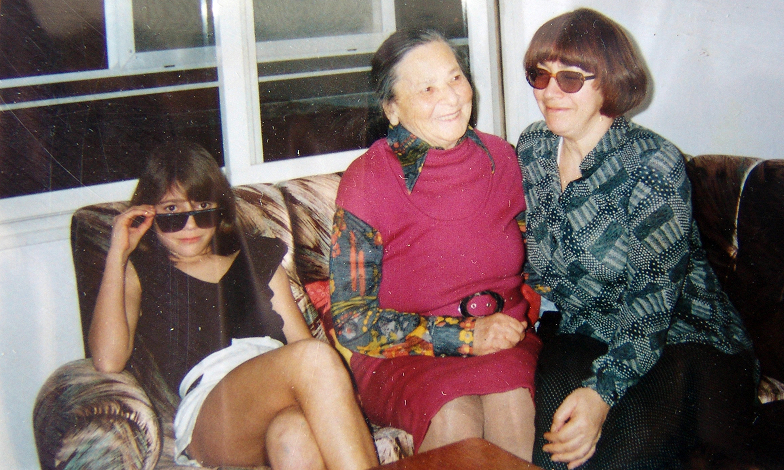
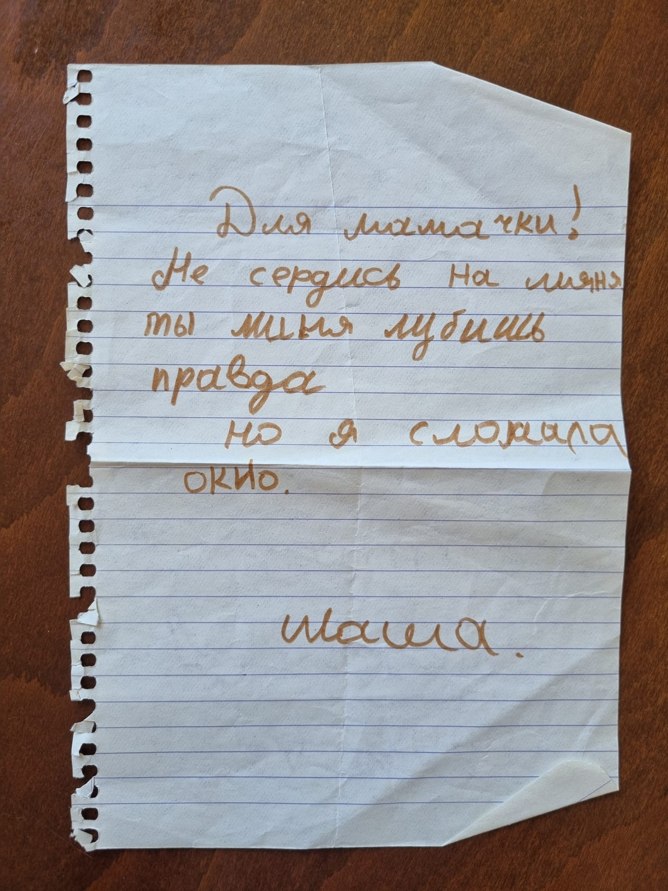
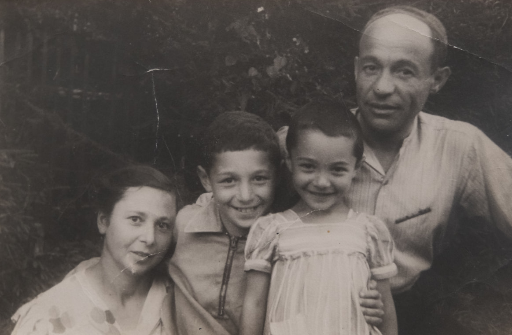

В августе 1992 года мы переехали из Ткоа в Бейт-Шемеш - в купленную квартиру. Я не могла мириться с тем, что из-за нашей неустроенности Маша каждый год меняет школу, а мама - врача. Я не задумывалась, справлюсь ли с ссудой или нет. Если бы начала всё просчитывать - ни за что бы не купила. Просто... так жить нельзя!
Я, моя мама и моя дочь Маша в нашей новой квартире.
И это то, что меня заставило решиться на эту, можно сказать, аферу - ну прямо как головой в омут. Но, что омут окажется ещё темнее, я не предвидела. В октябре у меня кончился договор, мне его не продлили. Итак, я - безработная с огромной ссудой на квартиру. С выпученными от страха глазами бегаю по всевозможным места, где была хоть малейшая надежда на работу.
В городском отделе Министерства абсорбции (мисрад клита) я встретила замечательного человека - Арье Арнона. Моя благодарная память требует рассказать о нём.
Этот человек был по-настоящему повернут к людям: его сердце, его душа были настроены на помощь. Как я понимаю, у него не было больших возможностей, но он был очень внимателен, и как только появлялась хоть малейшая возможность - он её не упускал. И часто она действительно срабатывала. Я знаю, что он помог многим.
Моя вторая работа получилась его стараниями. Но особая моя благодарность даже не за это. Я не могу забыть, как, я отчаявшись найти работу по специальности попросила его свозить меня в бейт авот ( сама я не могла туда добраться) - там требовались метаплот. Он мне отказал. Каюсь, подумала - наверное для кого-то “своего” придерживает .Но он добавил: "Сиди. У тебя ЕСТЬ специальность. БУДЕТ у тебя работа. С ударение на есть и будет. И правда - он как-то позвонил мне и сказал, что сын его знакомых открывает в Бейт-Шемеше компьютерную фирму. И добавил: "Сходи к нему. Может, ты ему подойдёшь." Я сходила - и получилось.
Однажды он увидел меняна улице и спросил, что я ищу. Я ответила, что ищу стекольщика - Маша разбила окно в спальне. К вечеру он пришёл и вставил стекло. Мы с Машей любили ходить в бассейн. Арье бывал там со своей внучкой. Играл с ней, забавлялся. Завидев Машу подхватывал и ее, подбрасывал и она счастливая плюхалась в воду.
Вот таким был этот человек - добрым, чутким, щедрым.
Среди моих бумаг я нашёл записку от Маши, когда ей было 10 лет и она разбила окно: "Для моей мамочки, не сердись на меня, ты же меня любишь, правда? Но… я разбила окно. Маша."
Мне всё время хотелось объяснить Маше, почему мы уехали из нашего благополучного дома, из красивой, большой Москвы, от маминой красивой работы и всего остального - и оказались в стране с непонятным языком, без денег, без родных и друзей. Хотелось объяснить так, чтобы она поняла и не страдала из-за того, что оставила. Но как объяснить, ведь ей всего семь лет?
И вот однажды, гуляя с ней вечером в Бейт-Шемеше, я решила начать этот разговор. Хоть уже и постарше она на два года, а как мое, так долго зревшее во мне решение донести до 9-летнего ребёнка. И я говорю ей: “знаешь, Машенька, в России очень плохо относились к евреям. Даже шутка была такая: если в кране нет воды, ее выпили жиды.”
И тут моя Маша спрашивает: “а кто такие жиды?” Господи, мой ребёнок дожил до девяти лет и не слышал никогда слово жиды. Только ради одного этого стоило уехать.
Я чуть ли не с младенчества знала, что со мной, папой, мамой и братом Сашей что-то не так. Девочки во дворе не хотели со мной играть. Это было очень обидно и не понятно. Что же такое во мне нехорошее, постыдное!?
Лето 1946 года. Я в подмосковном детском саду. Родительский день. Мама, папа и брат Саша приехали меня навестить.
И вот однажды выхожу я во двор и говорю: “А я и не еврейка, я англичанка”. Накануне дома я слышала, как мой старший брат готовит домашнее задание по английскому - учит слова. Я до сих пор помню эти слова: “table”, “star”, “chair”. Девочки говорят: “А скажи что-нибудь по английски”. Я им и выдала эти слова. Смешно, но этих слов было им достаточно и они поверили. В этот день они играли со мной. Но на следующий день одна из них сказала: “мама сказала, что ты врешь, ты еврейка, а не англичанка”. И вот опять меня не принимают в игру.
Забавно, моя дочь живет в Британиии, язык ее семьи - английский. И в самом деле пути Господни неисповедимы.
Нимрод был тот, к кому мне посоветовал "сходить" Арье. Да, мне ужасно повезло - я не только получила работу, но и замечательного босса и учителя.
Но не все так гладко и сразу получилось. Я рассказала, чем я занималась в московском университете, что я знаю и умею. Мой СV явно произвёл на Нимрода впечатление. Уважительно глядя на меня, он пододвинул клавиатуру и дисплей ко мне, дал мышку и сказал: ну, покажи, что ты умеешь. А я в университете работала на большой машине БЭСМ-4,6 и мышку держала в руках первый раз. Конечно мышка начала метаться по экрану, а потом и вовсе исзла. Нимрод засмеялся и говорит: да, далеко она побежала, наверное, к твоему дому. Потом посерьёзнел, вздохнул и говорит: да, это берет время ( זה לוקח זמן).
И все же он решил попробовать Он объяснил, что фирмы ещё нет, но есть перспектива большого хорошего заказа от крупной фирмы. А пока я могу приходить, он будет знакомить меня с Toolbook , программным инструментом, на котором будет выполняться проект. Он вручил мне толстую книгу на английском и дал первое задание. Английский мой был сильно не ахти, иврит - младенческий плюс совершенно новый метод программирования. Но, как говорится вариантов не было, надо продираться через эти джунгли.
Но однажды Нимрод говорит: “Галина, у меня нет для тебя работы”. Сердце моё сжалось. Превозмогая страх, стыд произношу небрежно: “Tы не возражаешь, если я буду продолжать приходить?“. Нимрод не смог мне отказать. Продолжаю ходить, разбираться. На душе тьма кромешная. Правда временами забываю своё положение, уж очень увлекательно было осваивать новый инструмент.
И вот однажды вечером, дождавшись возвращения Нимрода, зову его к компьютеру и прошу ввести в указанное мной место на экране любое число. Он вводит - и голова человечка на экране подпрыгивает столько раз, сколько он ввёл. Он пробует ещё и ещё, а мой человечек послушно прыгает столько, сколько нужно, и не ошибается. В этой простенькой программке я использовала все основные элементы Toobook'a тем самым показав, что я разобралась в Toolbook'e. И за 2 месяца до окончания пособия по безработице Нимрод говорит: “Галина не ходи больше отмечаться в лишкат авода (биржа труда), я открываю фирму и беру тебя на работу“.
Это были счастливые три года. Интереснейшая работа, зарплата хоть и небольшая, но позволяла оставаться на плаву и замечательный климат в коллективе. Нимрод был влюблён в программирование. Ценился профессионализм, добросовестность, полностью отсутствовало соперничество, И была радость от красиво сделанной работы.
Нимрод, eгo жена Ронит и его родители не оставили без внимания даже маму и Машу. Приглашали к себе на большие и маленькие вечеринки. Мама с радостью окуналась в давно забытый язык ее детства.
Так уж случилось, что в Израиль мы приехали “голые и босые”. Помните, тогда багаж отправить было невозможно, да и в магазинах - пустые полки. Особенно плохо было с обувью. Всю осень и зиму я под проливным израильским дождём пробегала в резиновых сапогах, в которые часто попадала вода от мчащихся по лужам машин. Ноги были вечно мокрые и холодные.
И вот, начав получать зарплату, а не пособие по безработице, я решилась купить себе обувь - и больше не ходить с мокрыми, холодными ногами. Я пошла в иерусалимский Машбир. Продавец - немолодая “ола хадаша” - приносила мне пару за парой, а мне всё не подходило. И вдруг она принесла сапожки - ну прямо по моей ноге! Мы обе облегчённо вздохнули. Я радовалась: сапожки лёгкие, тёплые, не промокают. Помню даже фирму - германская фирма Rond.
А продавец со вздохом сказала: "Вы не представляете, сколько людей голову морочат - и ничего не покупают..."